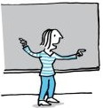

<html lang="en"></html>
<head>
    <meta charset="UTF-8">
    <meta name="viewport" content="width=device-width, initial-scale=1.0">
    <title>Curio Open Dag</title>
    <link rel="stylesheet" href="style.css">
</head>
<body>
    <header>
        <nav>
            
            <br>
            <br>
            <a href="index.html">Home</a>
            <a href="info.html">Algemene Info</a>
            <a href="docenten.html">Docenten</a>
            <a href="rooster.html">Rooster</a>
            <a href="vakken.html">Vakken</a>
        </nav>
    </header>
    <main>
        <div class="container">
            <div class="docenten">
                <h1>Docenten</h1>
                <p>De docenten op de opleiding Software Development aan de Curio-locatie aan de Terheijdenseweg in Breda vormen een divers en deskundig team. Ze hebben allemaal ervaring in de IT-sector en zijn experts in verschillende gebieden zoals programmeren, software engineering, databases, en webontwikkeling. Door hun praktische ervaring kunnen ze theorie koppelen aan real-life situaties, wat de lessen interactief en relevant maakt.</p>
                <div class="docentvak">
                    
                    <h3>Armando</h3>
                    <p>Jan Jansen is een ervaren programmeur en software engineer. Hij heeft gewerkt aan verschillende projecten, variërend van mobiele apps tot webapplicaties. Jan is gepassioneerd over het delen van zijn kennis en ervaring met studenten en helpt hen om hun programmeervaardigheden te ontwikkelen.</p>
                </div>
            </div>
        </div>
    </main>
    <footer>
        <p>&copy; Tijn Avontuur 2024</p>
    </footer>
</body>
</html>